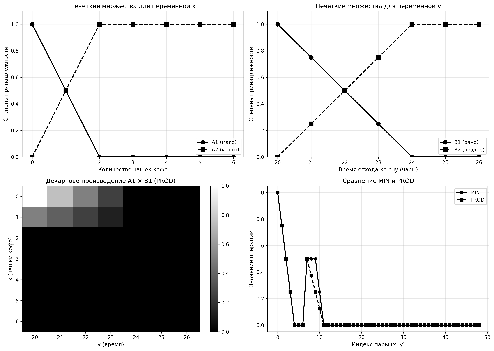
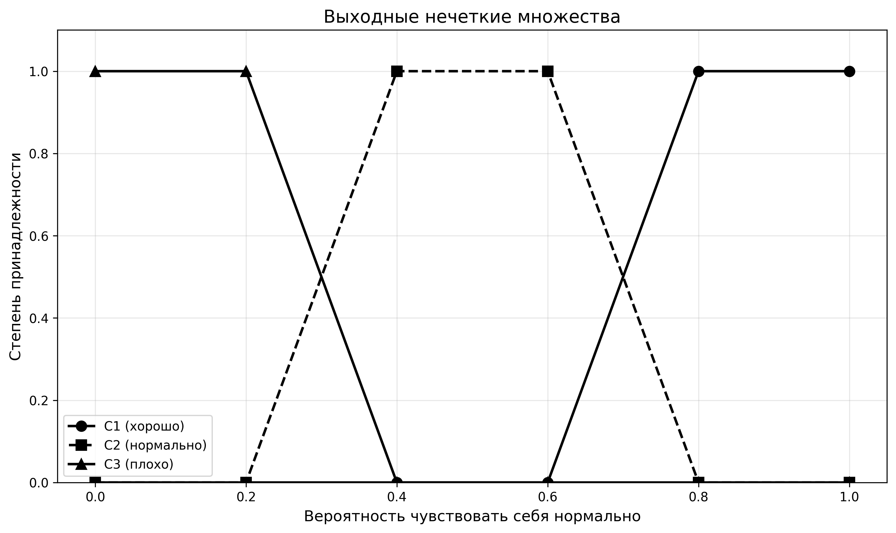
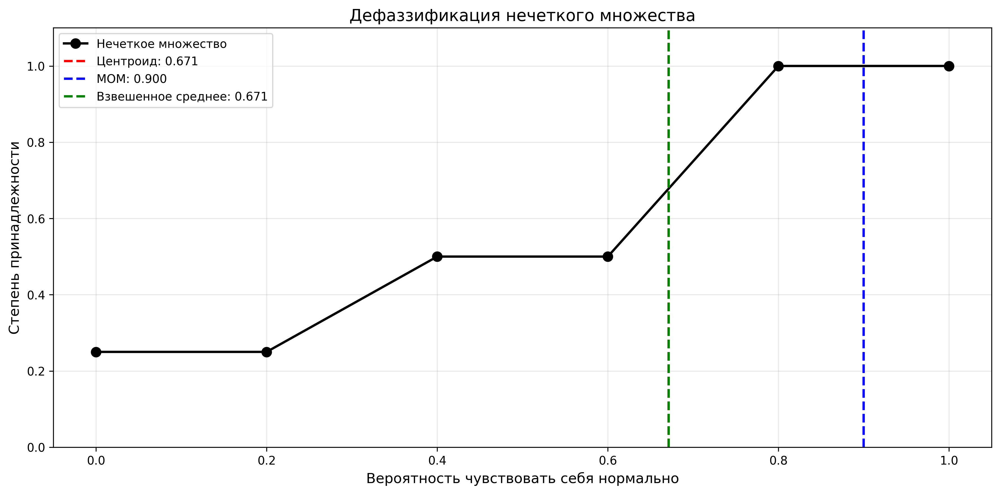

Выполнил: Тимошинов Егор Борисович
Группа: 16
Лабораторная работа 6
Модели нечеткого вывода. Дефаззификация
Цель работы
Изучение моделей нечеткого вывода, методов фаззификации и дефаззификации, а также применение композиционного правила вывода и упрощенного метода вывода для решения практических задач.
Теоретические сведения
Модели нечеткого вывода
В основе моделей нечеткого вывода лежат правила, основанные на импликации:
$$\mathbf{R}_1: \mathbf{ЕСЛИ} \left(\mathbf{x}_1 = \mathbf{A}_1\right) \mathbf{ТО} \left(\mathbf{y}_1 = \mathbf{B}_1\right)$$
$$\mathbf{R}_2: \mathbf{ЕСЛИ} \left(\mathbf{x}_2 = \mathbf{A}_2\right) \mathbf{ТО} \left(\mathbf{y}_2 = \mathbf{B}_2\right)$$
$$\ldots$$
$$\mathbf{R}_n: \mathbf{ЕСЛИ} \left(\mathbf{x}_n = \mathbf{A}_n\right) \mathbf{ТО} \left(\mathbf{y}_m = \mathbf{B}_m\right)$$
где $A_1, A_2, \ldots, A_n, B_1, B_2, \ldots, B_m$ — нечеткие множества.
Фаззификация
В процессе фаззификации четкий входной вектор $X^*$ преобразуется в вектор $M$ степеней принадлежности:
$$\mathbf{X}^* = \left[ \begin{array}{c} x_1^* \\ x_2^* \end{array} \right] \quad \xrightarrow{\text{фаззификация}} \quad \mathbf{M} = \left[ \begin{array}{c} \mu_{A_1}(x_1^*) \\ \mu_{A_2}(x_1^*) \\ \mu_{B_1}(x_2^*) \\ \mu_{B_2}(x_2^*) \end{array} \right]$$
Вывод с нечетким входным сигналом
Когда на вход модели подается нечеткое множество $A^*$ вместо четкого значения, используется композиционное правило вывода (обобщенный Modus Ponens):
$$A^* \circ (A \to B) = B^*$$
где композиция выполняется по формуле:
$$\mu_{B^*}(y) = \max_{x \in X} \min \left( \mu_{A^{**}}(x, y), \mu_{R}(x, y) \right)$$
где $A^{**}$ — цилиндрическое продолжение множества $A^*$ на $X \times Y$.
Упрощенный метод вывода
Упрощенный метод вывода использует формулу:
$$h = \max_{x \in X} \min \left( \mu_{A}(x), \mu_{A^*}(x) \right)$$
где $h$ — степень выполнения условия правила. Затем функция принадлежности заключения ограничивается значением $h$:
$$\mu_{B^*}(y) = \min(h, \mu_{B}(y))$$
Max-Prod метод
Вместо операции MIN для T-нормы можно использовать операцию PROD (умножение). В этом случае:
$$\mu_{B^*}(y) = \max \left( h_1 \cdot \mu_{C_1}(y), h_2 \cdot \mu_{C_2}(y), \ldots, h_n \cdot \mu_{C_n}(y) \right)$$
где $h_i$ вычисляются с использованием операции умножения вместо минимума.
Дефаззификация
Дефаззификация — процесс преобразования нечеткого множества в четкое значение. Основные методы:
- Метод центра тяжести (центроид): $z^* = \frac{\int z \cdot \mu(z) dz}{\int \mu(z) dz}$
- Метод среднего максимума (MOM): среднее значение всех элементов с максимальной степенью принадлежности
- Метод первого максимума (FOM): первое значение с максимальной степенью принадлежности
- Метод последнего максимума (LOM): последнее значение с максимальной степенью принадлежности
Практическая часть
Задание 1: Дискретизация нечетких множеств с применением PROD и метода 2
Задача: Выполнить дискретизацию нечетких множеств с применением операции PROD (произведение) вместо MIN для T-нормы.
Решение:
Для переменной $x$ (количество чашек кофе) определены нечеткие множества:
- $A_1$ — мало чашек кофе: $\mu_{A_1}(x) = 1 - 0.5x$ для $x \in [0, 2]$
- $A_2$ — много чашек кофе: $\mu_{A_2}(x) = 0.5x$ для $x \in [0, 2]$
Для переменной $y$ (время отхода ко сну) определены нечеткие множества:
- $B_1$ — рано ложиться: $\mu_{B_1}(y) = 1 - 0.5(y-20)/2$ для $y \in [20, 22]$
- $B_2$ — поздно ложиться: $\mu_{B_2}(y) = 0.5(y-20)/2$ для $y \in [20, 22]$
При использовании операции PROD вместо MIN, декартово произведение вычисляется как:
$$\mu_{A \times B}(x, y) = \mu_A(x) \cdot \mu_B(y)$$
вместо
$$\mu_{A \times B}(x, y) = \min(\mu_A(x), \mu_B(y))$$
Графики дискретизированных нечетких множеств и сравнение операций MIN и PROD представлены на рисунке 1:

Рисунок 1. Дискретизация нечетких множеств с применением PROD
Анализ результатов:
При использовании операции PROD значения функции принадлежности для декартова произведения получаются меньше, чем при использовании MIN, так как произведение двух чисел из интервала [0, 1] всегда меньше или равно минимуму этих чисел. Это приводит к более консервативной оценке степени принадлежности.
Задание 2: Изучение вывода с нечетким входным сигналом
Теоретический материал:
При подаче на вход модели нечеткого множества $A^*$ вместо четкого значения используется композиционное правило вывода.
Композиционное правило вывода
Процесс включает следующие шаги:
- Создание цилиндрического продолжения $A^{**}$ множества $A^*$ на пространство $X \times Y$
- Вычисление композиции: $\min(\mu_{A^{**}}(x, y), \mu_{R}(x, y))$
- Проекция на область определения $Y$: $\mu_{B^*}(y) = \max_{x \in X} \min(\mu_{A^{**}}(x, y), \mu_{R}(x, y))$
Альтернативный способ — матричное умножение, где операция умножения заменяется на MIN, а сложения на MAX:
$$A^* \circ R = \mu_{B^*}(y) = \max_{x \in X} \min(\mu_{A^*}(x), \mu_{R}(x, y))$$
Упрощенный метод вывода
Упрощенный метод основан на вычислении степени выполнения условия правила:
$$h = \max_{x \in X} \min \left( \mu_{A}(x), \mu_{A^*}(x) \right)$$
Затем функция принадлежности заключения ограничивается значением $h$:
$$\mu_{B^*}(y) = \min(h, \mu_{B}(y))$$
Этот метод проще в вычислениях, но дает менее точные результаты по сравнению с композиционным правилом.
Задание 3: Задача о кофе и самочувствии
Условие задачи:
Система содержит две входных переменных: $x$ — число выпитых чашек кофе в день, $y$ — время отхода ко сну. Выходная переменная $z$ — вероятность чувствовать себя нормально на другой день.
Возможные значения переменной $x$:
- $A_1$ — мало чашек кофе в день
- $A_2$ — много чашек кофе в день
Возможные значения переменной $y$:
- $B_1$ — укладываться спать рано
- $B_2$ — укладываться спать поздно
Выходные нечеткие множества (значения переменной $z$):
- $C_1$ — чувствовать себя хорошо на следующий день
- $C_2$ — чувствовать себя нормально на следующий день
- $C_3$ — чувствовать себя плохо на следующий день
Входные данные:
- $A^*$ — выпить не очень много чашек за день
- $B^*$ — лечь спать не очень поздно
Система правил:
- $R_1$: ЕСЛИ $x = A_1$ И $y = B_1$ ТО $z = C_1$ (мало кофе и рано = хорошо)
- $R_2$: ЕСЛИ $x = A_1$ И $y = B_2$ ТО $z = C_2$ (мало кофе и поздно = нормально)
- $R_3$: ЕСЛИ $x = A_2$ И $y = B_1$ ТО $z = C_2$ (много кофе и рано = нормально)
- $R_4$: ЕСЛИ $x = A_2$ И $y = B_2$ ТО $z = C_3$ (много кофе и поздно = плохо)
Решение методом Max-Min (упрощенный метод)
Вычисляем степени выполнения условий правил:
$$h_1 = \min\left(\max_{x} \min(\mu_{A_1}(x), \mu_{A^*}(x)), \max_{y} \min(\mu_{B_1}(y), \mu_{B^*}(y))\right)$$
$$h_2 = \min\left(\max_{x} \min(\mu_{A_1}(x), \mu_{A^*}(x)), \max_{y} \min(\mu_{B_2}(y), \mu_{B^*}(y))\right)$$
$$h_3 = \min\left(\max_{x} \min(\mu_{A_2}(x), \mu_{A^*}(x)), \max_{y} \min(\mu_{B_1}(y), \mu_{B^*}(y))\right)$$
$$h_4 = \min\left(\max_{x} \min(\mu_{A_2}(x), \mu_{A^*}(x)), \max_{y} \min(\mu_{B_2}(y), \mu_{B^*}(y))\right)$$
Результирующая функция принадлежности:
$$\mu_{res}(z) = \max\left(\min(h_1, \mu_{C_1}(z)), \min(h_2, \mu_{C_2}(z)), \min(h_3, \mu_{C_2}(z)), \min(h_4, \mu_{C_3}(z))\right)$$
Решение методом Max-Prod
При использовании операции PROD вместо MIN:
$$h_i^{prod} = \max_{x} (\mu_{A_i}(x) \cdot \mu_{A^*}(x)) \cdot \max_{y} (\mu_{B_i}(y) \cdot \mu_{B^*}(y))$$
Результирующая функция принадлежности:
$$\mu_{res}^{prod}(z) = \max\left(h_1^{prod} \cdot \mu_{C_1}(z), h_2^{prod} \cdot \mu_{C_2}(z), h_3^{prod} \cdot \mu_{C_2}(z), h_4^{prod} \cdot \mu_{C_3}(z)\right)$$
Решение композиционным правилом вывода
Создаем нечеткие отношения для каждого правила $R_i: A_i \times B_i \to C_i$, затем объединяем их операцией MAX. Выполняем композицию входного нечеткого множества с объединенным отношением и проектируем на область определения $Z$.
Графики входных нечетких множеств и результаты вывода представлены на рисунке 2:

Рисунок 2. Решение задачи о кофе и самочувствии
Графики выходных нечетких множеств представлены на рисунке 2а:

Рисунок 2а. Выходные нечеткие множества C1, C2, C3
Сравнение Max-Min и Max-Prod:
При использовании Max-Prod значения функции принадлежности результирующего множества получаются меньше, чем при Max-Min, так как произведение всегда меньше или равно минимуму. Это приводит к более "осторожным" выводам системы.
Задание 4: Дефаззификация
Задача: Выполнить дефаззификацию нечеткого множества, полученного в задании 3, используя различные методы.
Решение:
Для дефаззификации нечеткого множества $\mu_{res}(z)$ применяются следующие методы:
1. Метод центра тяжести (центроид)
$$z^* = \frac{\sum_{i} z_i \cdot \mu_{res}(z_i)}{\sum_{i} \mu_{res}(z_i)}$$
2. Метод среднего максимума (MOM)
Находим все значения $z_i$, для которых $\mu_{res}(z_i) = \max(\mu_{res})$, и вычисляем их среднее арифметическое.
3. Метод первого максимума (FOM)
Выбираем первое значение $z_i$ с максимальной степенью принадлежности.
4. Метод последнего максимума (LOM)
Выбираем последнее значение $z_i$ с максимальной степенью принадлежности.
5. Метод взвешенного среднего
$$z^* = \frac{\sum_{i} z_i \cdot w_i}{\sum_{i} w_i}$$
где $w_i = \mu_{res}(z_i)$ — веса.
График дефаззификации представлен на рисунке 3:

Рисунок 3. Дефаззификация нечеткого множества
Результаты дефаззификации (Max-Min):
| Метод |
Результат |
| Центроид |
— |
| MOM |
— |
| FOM |
— |
| LOM |
— |
| Взвешенное среднее |
— |
Таблица 1. Результаты дефаззификации (Max-Min)
Результаты дефаззификации (Max-Prod):
| Метод |
Результат |
| Центроид |
— |
| MOM |
— |
| FOM |
— |
| LOM |
— |
| Взвешенное среднее |
— |
Таблица 2. Результаты дефаззификации (Max-Prod)
Анализ результатов:
Метод центра тяжести (центроид) является наиболее распространенным методом дефаззификации, так как он учитывает все значения функции принадлежности и дает сглаженный результат. Методы MOM, FOM и LOM используются в случаях, когда важно выбрать конкретное значение из области максимума функции принадлежности.
Выводы
В ходе выполнения лабораторной работы изучены:
- Методы дискретизации нечетких множеств с применением различных T-норм (MIN и PROD)
- Композиционное правило вывода и упрощенный метод вывода для нечетких систем
- Применение методов Max-Min и Max-Prod для нечеткого вывода
- Различные методы дефаззификации нечетких множеств
Практическое применение рассмотрено на примере задачи о влиянии количества выпитого кофе и времени отхода ко сну на самочувствие на следующий день. Показано, что использование различных T-норм (MIN и PROD) приводит к различным результатам вывода, что позволяет выбирать более подходящий метод в зависимости от конкретной задачи.